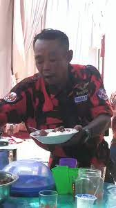
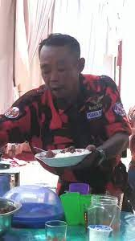

Pemuda Pancasila adalah sebuah organisasi paramiliter Indonesia yang didirikan oleh Jenderal Abdul Haris Nasution pada 28 Oktober 1959, sejak tahun 1981 dipimpin oleh Japto Soerjosoemarno. Organisasi ini dibentuk dari gangster politik semi-resmi yang mendukung pemerintahan Orde Baru Soeharto.
Mengutip laman Badan Pelaksana Kaderisasi Pemuda Pancasila, organisasi Pemuda Pancasila dideklarasikan pada 28 Oktober 1959. Pembentukan organisasi Pemuda Pancasila diprakarsai oleh penggawa partai politik Ikatan Pendukung Kemerdekaan Indonesia (IPKI). Untuk diketahui, IPKI merupakan partai politik yang didirikan oleh pentolan militer Indonesia pada era Orde Lama atau pada saat era kepemimpinan Presiden Soekarno. Mengutip laman Perpustakaan Nasional Republik Indonesia, partai politik IPKI merupakan kelanjutan IPKI yang dibentuk sejak 20 Mei 1954. Para tokoh pemrakarsa IPKI di antaranya adalah Kolonel Abdul Haris Nasution, Kolonel Gatot Subroto, Kolonel Aziz Saleh, dan lainnya. IPKI merupakan partai politik yang didirikan dengan tujuan sebagai lawan ideologis dari Partai Komunis Indonesia (PKI). Ketika PKI mendirikan organisasi Pemuda Rakyat, IPKI meresponsnya dengan mendirikan organisasi Pemuda Pancasila pada 28 Oktober l959. Gesekan antara Pemuda Pancasila dan PKI menjadi hal yang tak bisa dihindari. Bahkan, Pemuda Pancasila bersama Angkatan Bersenjata Republik Indonesia (ABRI) terlibat dalam pembersihan PKI dan seluruh anasir komunis di Indonesia saat gejolak tahun 1965 yang menjadi cikal bakal kelahiran Orde Baru yang dipimpin Presiden Soeharto.

Ketua Umum Majelis Pimpinan Nasional (MPN) Pemuda Pancasila (PP) Japto Soelistyo Soerjosoemarno menyampaikan, Rakor PP diadakan dalam rangka mengkoordinasikan program-program hasil Muswil dari seluruh MPW se-Indonesia untuk dirangkum menjadi satu program nasional
Pemuda Pancasila juga harus dapat hadir di tengah-tengah masyarakat untuk memberikan kemanfaatan, mampu menjaga masyarakat dari pihak-pihak yang ingin memperkeruh keadaan, serta mampu menjaga ideologi Pancasila dari rongrongan tindakan intervensi ideologis transnasional

 
